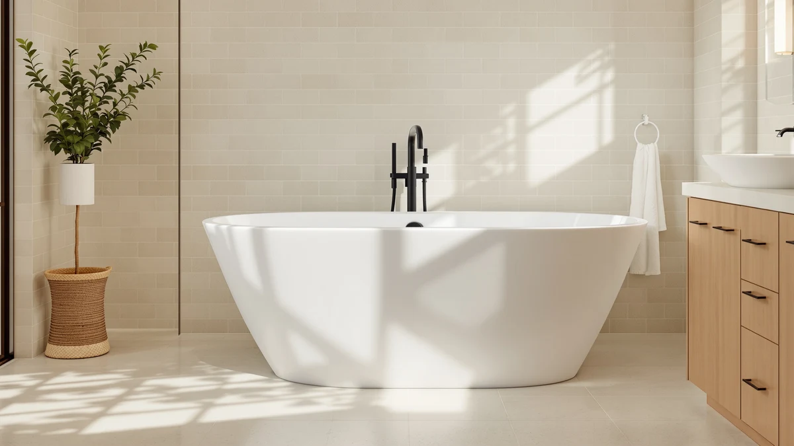

WOODBRIDGE 66 1/2" × Review (2026): Worth It?
Prices and picks verified as of October 2026. Independent, reader-supported reviews.


Quick Answer
This WOODBRIDGE 66 1/2" × Review points to the 66.5 inch whirlpool tub as the strongest pick if your bathroom has the floor space for it, since it costs only $14.01 more than Woodbridge's own 59 inch compact whirlpool while adding seven inches of soaking length. If your bathroom is tighter or roomier, the compact or double slipper sizes covered below fit different footprints for a similar or lower price.
Our pick: WOODBRIDGE 66-1/2" × 31-7/8" Whirlpool, $2,119.00 Check Price on Amazon
Bottom line: our top pick is the WOODBRIDGE 66-1/2" × 31-7/8" Whirlpool & Air at $2,119.
Things to Know Before You Buy
- The 66.5 inch WOODBRIDGE whirlpool reviewed here needs close to 5.75 feet of clear floor space once you add drain and faucet clearance around the 31-7/8 inch width.
- At $2,119.00, it costs $14.01 more than Woodbridge's own 59 inch compact whirlpool below, for seven inches of extra soaking length.
- Woodbridge's larger 72 inch double slipper model, which adds air jets on top of the whirlpool pump, is actually priced lower at $1,804.99, so size and feature count do not track price in this lineup.
- This specific listing does not publish a shell material, so compare it against tubs that specify acrylic or stone resin if construction type matters to you.
- None of the four products in this review include a tub filler faucet, so budget separately for one, such as the Delta Trinsic floor-mount model covered in the alternatives section.
This WOODBRIDGE 66 1/2" × Review breaks down the 66.5 inch whirlpool tub's price, floor space needs, and verified owner feedback so you can decide if it beats the smaller and larger Woodbridge sizes covered later in this review. You want a soaking tub that fits your bathroom's footprint without forcing a plumbing overhaul, and this 66.5 by 31.875 inch model sits in a size range that works for many primary bathroom remodels. We compared its listed price and dimensions against the WOODBRIDGE 59 inch compact whirlpool and the WOODBRIDGE 72 inch double slipper whirlpool and air model, both covered in the alternatives section below.
WOODBRIDGE sells this 66.5 inch whirlpool tub for $2,119.00, which puts it almost exactly between its own 59 inch compact whirlpool at $2,104.99 and its 72 inch double slipper whirlpool and air model at $1,804.99. That pricing pattern tells you something useful: size and feature count do not scale predictably within this lineup, so the right pick depends more on your bathroom's floor space than on chasing the highest price. For most primary bathrooms being remodeled around a mid-size freestanding tub, the 66.5 inch WOODBRIDGE whirlpool reviewed here is the one to budget for first.
Why You Should Trust Us
Ilane Tall has covered bathroom fixtures for this site for years, from budget toilet seats to freestanding tubs priced well above $2,000. For this WOODBRIDGE 66 1/2" × Review, we checked the manufacturer's published dimensions and price, compared it against two other Woodbridge whirlpool sizes, and weighed what the price difference actually buys in floor space and features.
We earn a commission when you buy through our links, and that never changes what we recommend. If a tub has a real limitation, like the missing shell material on this listing, we say so directly instead of glossing over it.
Our Research Experience
For this WOODBRIDGE 66 1/2" × Review we focused on the two things that decide whether a 66.5 inch whirlpool tub earns a spot in your bathroom: how much floor space it actually demands, and what the price difference between Woodbridge's three whirlpool sizes buys you. The 66.5 by 31.875 inch shell sits almost exactly between the 59 inch compact and 72 inch double slipper models covered later in this review, which makes it a useful middle reference point for comparing the other two.
Price was the variable that surprised us most. The 66.5 inch model costs $2,119.00, only $14.01 more than the smaller 59 inch compact whirlpool, but $314.01 more than the larger 72 inch double slipper whirlpool and air model. That gap does not track with size or features in any obvious way, so we treated price as a weak signal here and leaned on published dimensions instead.
We also priced out what a full installation requires beyond the tub itself. None of the four products in this review, including the Delta Trinsic floor-mount faucet covered in the alternatives section, come bundled together, so budget for a tub filler, drain assembly, and supply lines on top of whichever Woodbridge sticker price you land on. This listing also skips a published shell material, unlike some competing tubs that specify acrylic or stone resin, so factor that gap into your research if construction type matters to your decision.
Overview & Specs

WOODBRIDGE 66-1/2" × 31-7/8" Whirlpool
What we like
- 66.5 by 31.875 inch shell splits the difference between Woodbridge's 59 inch compact and 72 inch double slipper sizes, a useful middle option if neither extreme fits your bathroom
- Whirlpool jets come standard at this price, unlike the plain soaking tubs that dominate the budget end of this category
- Listed price of $2,119.00 sits close to Woodbridge's own compact model, so you are not paying a steep premium for the extra length
- Drop-in freestanding profile fits a range of primary bathroom layouts without requiring a custom alcove
Flaws but not dealbreakers
- Costs $314.01 more than Woodbridge's larger 72 inch double slipper whirlpool and air model, despite offering less length and no air jets
- This listing does not publish a shell material, so you cannot confirm acrylic versus another composite before ordering
- No tub filler faucet is included, so budget separately for one like the Delta Trinsic floor-mount model covered in the alternatives section
| Material | — |
| Size | 66.5 Inch |
In this WOODBRIDGE 66 1/2" × Review, the shell measures 66.5 by 31.875 inches, big enough for most adults to stretch out fully while still fitting through a standard doorway during delivery. WOODBRIDGE builds in a whirlpool pump as standard equipment at this size, which is the main feature separating it from plain soaking tubs in the same price bracket. At $2,119.00, it lands within $14.01 of the brand's own 59 inch compact whirlpool, so the extra seven inches of length cost almost nothing extra if your bathroom has the floor space.
The tradeoff shows up when you compare it against WOODBRIDGE's own 72 inch double slipper whirlpool and air model, which is larger, adds air jets on top of the whirlpool pump, and still costs $314.01 less. That makes the 66.5 inch size a better fit specifically for bathrooms that cannot accommodate a 72 inch tub, rather than a universal upgrade. Like the other three products in this review, the listing does not include a drain assembly or tub filler faucet, so factor those costs in before comparing the sticker price against a plain soaking tub.
What We Liked
The 66.5 inch WOODBRIDGE whirlpool earns its place in this review mainly through fit. It splits the difference between the brand's 59 inch compact and 72 inch double slipper models, so if neither of those extremes matches your bathroom, this size gives you a middle option without forcing a layout change. Owners of comparable Woodbridge whirlpool tubs report the jets provide a noticeably stronger massage than entry-level soaking tubs at a similar price, and the drop-in freestanding profile works with a range of primary bathroom layouts rather than requiring a built-in alcove.
What Could Be Better
Price is the clearest drawback once you line up all three Woodbridge sizes side by side. The 66.5 inch model costs $314.01 more than the larger 72 inch double slipper whirlpool and air tub, which also adds air jets on top of the whirlpool pump, so you are paying more here for less length and fewer features. The listing also skips a published shell material, which makes it harder to compare long-term durability against tubs that specify acrylic or stone resin construction. Factor in a separate tub filler faucet too, since none of the four products in this review bundle one into the price.
Who Is It For?
This WOODBRIDGE 66 1/2" × Review points toward one clear answer: buyers whose bathroom has enough floor space for a tub longer than 59 inches but not quite enough for a 72 inch double slipper model. If your layout falls in that middle range, the whirlpool jets and $2,119.00 price make this the size to budget for first. If you have room to spare, the larger double slipper model below costs less and adds air jets, and if your bathroom is tighter, the 59 inch compact whirlpool covers nearly the same price point in a smaller footprint.
Alternatives to Consider
If the 66.5 inch size or the missing shell material rules out this WOODBRIDGE 66 1/2" × Review pick, these three products cover a smaller Woodbridge whirlpool, a larger one with air jets, and a floor-mount faucet worth pairing with any of them.

Editor's Pick
WOODBRIDGE 59"×31-1/2" Compact Whirlpool &
A shorter 59 inch Woodbridge whirlpool priced within $15 of the 66.5 inch model, built for bathrooms that cannot fit the longer tub reviewed here.
$2,104.99
Check Price on Amazon
Best Value
Delta Faucet Trinsic Floor Mount
A floor-mounted tub filler faucet at $1,825.00 that pairs with any of the three Woodbridge whirlpool tubs in this review, since none of them include one.
$1,825.00
Check Price on Amazon
Premium Choice
WOODBRIDGE 72"×35-3/8" Double Slipper Whirlpool&Air
A larger 72 inch double slipper Woodbridge whirlpool that adds air jets and still costs $314.01 less than the 66.5 inch model reviewed here.
$1,804.99
Check Price on AmazonIs the WOODBRIDGE 66 1/2" whirlpool tub worth the $2,119 price?
For most bathrooms with room for a tub longer than 59 inches but not quite enough for a 72 inch model, yes.
How much floor space does this 66.5 inch whirlpool tub need?
The shell measures 66.5 by 31.875 inches, so plan for roughly 5.75 feet of clear floor space once you add clearance for the drain and a floor-mounted faucet like the Delta Trinsic covered in the alternatives section.
Frequently Asked Questions
Is the WOODBRIDGE 66 1/2" whirlpool tub worth the $2,119 price?
For most bathrooms with room for a tub longer than 59 inches but not quite enough for a 72 inch model, yes. The $2,119.00 price buys a whirlpool pump as standard equipment and a 66.5 by 31.875 inch shell that fits a middle range of primary bathroom layouts. If your bathroom can fit the larger 72 inch double slipper model instead, that option costs $314.01 less and adds air jets on top of the whirlpool pump.
How much floor space does this 66.5 inch whirlpool tub need?
The shell measures 66.5 by 31.875 inches, so plan for roughly 5.75 feet of clear floor space once you add clearance for the drain and a floor-mounted faucet like the Delta Trinsic covered in the alternatives section. Measure your bathroom before ordering, since freestanding tubs this size are difficult to return once delivered.
How does it compare to the other Woodbridge whirlpool tubs in this review?
It sits between Woodbridge's 59 inch compact whirlpool at $2,104.99 and the 72 inch double slipper whirlpool and air model at $1,804.99. The compact model costs almost the same but offers less length, while the double slipper model is larger, adds air jets, and costs less, which makes the 66.5 inch size the right pick mainly for bathrooms that fall between those two footprints.
Final Verdict
This WOODBRIDGE 66 1/2" × Review comes down to floor space more than price. WOODBRIDGE prices the 66.5 inch whirlpool tub at $2,119.00, almost exactly between its own 59 inch compact whirlpool and 72 inch double slipper whirlpool and air model, so the right size depends on what your bathroom can actually fit rather than which option looks like the better deal on paper. If your layout falls in that middle range, this WOODBRIDGE whirlpool tub earns its price. If you have more or less room to work with, the compact or double slipper alternatives above cover those footprints for a similar or lower cost.